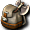

道
盒子・彩券內容（本伺服器）
我們伺服器點兩下打得開的盒子、彩券、禮包共 240 種；另外 161 種本伺服器還打不開的，照日版資料分成三類列在後面。點名稱看全部內容和機率。
彩券
| 盒子 | 打開會得到 |
 [布偶抽獎券]兌換券 [布偶抽獎券]兌換券 | 點兩下打開，全部都給： [未使用] 看全部內容 [未使用] 看全部內容 |
| [布偶抽獎券]兌換券 | 點兩下打開，全部都給：[未使用] 看全部內容 |
 什麼都有彩券 什麼都有彩券 | 點兩下打開，照機率抽 1 個： 攻擊迴避率增強藥水、 攻擊迴避率增強藥水、 防禦增強藥水、 防禦增強藥水、 攻擊力增速藥水、 攻擊力增速藥水、 手提包、 手提包、 藥劑包、 藥劑包、 腰包…共 2072 種 看全部內容 腰包…共 2072 種 看全部內容 |
| 任務彩券[上級] | 點兩下打開，照機率抽 1 個： [任務]消滅不可思議之國的亡靈、[任務]冰之城的僕人、[任務]討伐火焰飛龍、[任務]討伐羅德哥布林、[任務]除鬼[參]、[任務]討伐艾梅斯…共 94 種 看全部內容 [任務]消滅不可思議之國的亡靈、[任務]冰之城的僕人、[任務]討伐火焰飛龍、[任務]討伐羅德哥布林、[任務]除鬼[參]、[任務]討伐艾梅斯…共 94 種 看全部內容 |
| 任務彩券[中級] | 點兩下打開，照機率抽 1 個：[任務]討伐卡梅爾船長、[任務]討伐大塔特勒、[任務]討伐大塔特勒、[任務]討伐布羅尼、[任務]討伐魔界村的支配者、[任務]討伐寶石部隊…共 91 種 看全部內容 |
| 任務彩券[初級] | 點兩下打開，照機率抽 1 個：[任務]討伐迪斯凱帝、[任務]討伐札斯特、[任務]討伐札斯特、[任務]討伐哥布林騎士、[任務]討伐奈特梅爾、[任務]討伐達伊特倫…共 101 種 看全部內容 |
| 任務彩券[捕獲] | 點兩下打開，照機率抽 1 個：[任務]捕獲迪斯凱帝、[任務]捕獲札斯特、[任務]捕獲札斯特、[任務]捕獲諾肯突擊者、[任務]捕獲奈特梅爾、[任務]捕獲哥布林騎士…共 59 種 看全部內容 |
| 任務彩券[討伐] | 點兩下打開，照機率抽 1 個：[任務]討伐迪斯凱帝、[任務]討伐札斯特、[任務]討伐札斯特、[任務]討伐哥布林騎士、[任務]討伐奈特梅爾、[任務]討伐達伊特倫…共 60 種 看全部內容 |
| 任務彩券[調合] | 點兩下打開，照機率抽 1 個：[任務]調合基礎1、[任務]挑戰製作變聰明藥！、[任務]調合基礎2、[任務]挑戰製作變偉大藥！、[任務]調合基礎3、[任務]挑戰製作變強壯藥！…共 79 種 看全部內容 |
| 任務彩券[配送] | 點兩下打開，照機率抽 1 個：[任務]獻給國王的貢品、[任務]雜事雜事還是雜事、[任務]午後茶時間、[任務]發生火災！[貳]、[任務]雜事雜事還是雜事、[任務]難搞的研究家…共 55 種 看全部內容 |
| 任務彩券[附魔] | 點兩下打開，照機率抽 1 個：[任務]劍附魔初級、[任務]少年小小的願望、[任務]寶珠附魔初級、[任務]少女小小的願望、[任務]法杖附魔初級、[任務]斧附魔初級…共 33 種 看全部內容 |
| 加成彩券 | 點兩下打開，照機率抽 1 個： 信仰加成兌換券[110%]、信仰加成兌換券[120%]、信仰加成兌換券[130%]、信仰加成兌換券[140%]、信仰加成兌換券[150%]、經驗加成兌換券[110%]…共 38 種 看全部內容 信仰加成兌換券[110%]、信仰加成兌換券[120%]、信仰加成兌換券[130%]、信仰加成兌換券[140%]、信仰加成兌換券[150%]、經驗加成兌換券[110%]…共 38 種 看全部內容 |
| 外觀彩券 | 點兩下打開，照機率抽 1 個：再開 1 次「外觀彩券（日版內容）」、再開 1 次「外觀服裝池」 看全部內容 |
| 外觀彩券[B] | 點兩下打開，照機率抽 1 個：再開 1 次「外觀彩券[B]（日版內容）」、再開 1 次「外觀服裝池」 看全部內容 |
| 套組彩券2[限定版] | 點兩下打開，全部都給：再開 1 次「裝備彩券的內容」 ×3、再開 1 次「什麼都有彩券的內容」 ×5 看全部內容 |
| 套組彩券[限定版] | 點兩下打開，全部都給：再開 1 次「裝備彩券的內容」 ×3、再開 1 次「藥水彩券的內容」、再開 1 次「新手彩券的內容」 看全部內容 |
| 套組彩券[預言者公開紀念] | 點兩下打開，全部都給：外觀彩券 ×2、隨機彩券 ×10、再開 1 次「外觀染色劑池」 ×2 看全部內容 |
 拼圖彩券 拼圖彩券 | 點兩下打開，照機率抽 1 個： 拼圖片10-1、拼圖片10-10、拼圖片10-11、拼圖片10-12、拼圖片10-13、拼圖片10-14…共 101 種 看全部內容 拼圖片10-1、拼圖片10-10、拼圖片10-11、拼圖片10-12、拼圖片10-13、拼圖片10-14…共 101 種 看全部內容 |
| 新手彩券 | 點兩下打開，照機率抽 1 個：手提包、藥劑包、腰包、 發霉的麵包、 發霉的麵包、 腐敗的水果、 腐敗的水果、 蟲蛀的蘋果…共 195 種 看全部內容 蟲蛀的蘋果…共 195 種 看全部內容 |
| 稀有外觀彩券 | 點兩下打開，照機率抽 1 個：再開 1 次「稀有外觀彩券（日版內容）」、再開 1 次「稀有外觀池」 看全部內容 |
| 稀有外觀彩券[B] | 點兩下打開，照機率抽 1 個：再開 1 次「稀有外觀彩券[B]（日版內容）」、再開 1 次「稀有外觀池」 看全部內容 |
| 組合彩券[2008夏季限定版] | 點兩下打開，全部都給：外觀彩券 ×2、隨機彩券 ×10、再開 1 次「外觀染色劑池」 ×2 看全部內容 |
| 組合彩券[2008殘暑限定版] | 點兩下打開，全部都給：外觀彩券、什麼都有彩券 ×2、裝備彩券、再開 1 次「外觀染色劑池」、再開 1 次「一般染色劑池」 看全部內容 |
| 組合彩券[2009夏季限定版] | 點兩下打開，全部都給：外觀彩券 ×2、隨機彩券 ×10、再開 1 次「外觀染色劑池」 ×2 看全部內容 |
| 組合彩券[2011春季限定版]（金） | 點兩下打開，全部都給：稀有外觀彩券 ×2、隨機彩券 ×10、再開 1 次「外觀染色劑池」 ×2 看全部內容 |
| 組合彩券[2011春季限定版]（銀） | 點兩下打開，全部都給：外觀彩券 ×2、隨機彩券 ×10、再開 1 次「外觀染色劑池」 ×2 看全部內容 |
| 組合彩券[限定版](10th) | 點兩下打開，全部都給：外觀彩券 ×10、 正宗的寶箱 ×11 看全部內容 正宗的寶箱 ×11 看全部內容 |
| 組合彩券[限定版](十) | 點兩下打開，全部都給：外觀彩券 ×2、正宗的寶箱 ×3、什麼都有彩券 ×5 看全部內容 |
| 組合彩券[限定版](拾) | 點兩下打開，全部都給：稀有外觀彩券 ×2、正宗的寶箱 ×5、什麼都有彩券 ×3 看全部內容 |
| 組合彩券[限定版]（地） | 點兩下打開，全部都給：外觀彩券 ×2、隨機彩券 ×10、再開 1 次「外觀染色劑池」 ×2 看全部內容 |
| 組合彩券[限定版]（天） | 點兩下打開，全部都給：稀有外觀彩券 ×2、隨機彩券 ×10、再開 1 次「外觀染色劑池」 ×2 看全部內容 |
| 藥水彩券 | 點兩下打開，照機率抽 1 個：藥水組[標準]、藥水組[強化]、藥水組[體貼]、藥水組[B狂暴？]、藥水組[攻城戰]、藥水組[生命第一]…共 10 種 看全部內容 |
| 裝備彩券 | 點兩下打開，照機率抽 1 個： 卡普里科之鎚、 卡普里科之鎚、 雷鳴鼓(雙手)、地鳴鼓(雙手)、風鳴鼓(雙手)、 雷鳴鼓(雙手)、地鳴鼓(雙手)、風鳴鼓(雙手)、 破裂鼓(雙手)、碎魂鼓(雙手)…共 980 種 看全部內容 破裂鼓(雙手)、碎魂鼓(雙手)…共 980 種 看全部內容 |
| 隨機彩券 | 點兩下打開，照機率抽 1 個：攻擊迴避率增強藥水、防禦增強藥水、攻擊力增速藥水、手提包、藥劑包、腰包…共 2072 種 看全部內容 |
| 隨機彩券2 | 點兩下打開，照機率抽 1 個：攻擊迴避率增強藥水、防禦增強藥水、攻擊力增速藥水、手提包、藥劑包、腰包…共 2072 種 看全部內容 |
箱子・盒子
| 盒子 | 打開會得到 |
| [神秘小盒]兌換券 | 點兩下打開，全部都給：[未使用] 看全部內容 |
| [神秘箱子]兌換券 | 點兩下打開，全部都給：[未使用] 看全部內容 |
| 丹皮爾斯的寶箱 | 點兩下打開，照機率抽 1 個：路爾斯國支票、 全效藥水 ×5、 全效藥水 ×5、 混合藥水 ×10 看全部內容 混合藥水 ×10 看全部內容 |
 加油用喇叭箱[1個] 加油用喇叭箱[1個] | 點兩下打開，全部都給： 加油用喇叭 看全部內容 加油用喇叭 看全部內容 |
| 加油用喇叭箱[5個] | 點兩下打開，全部都給：加油用喇叭 ×5 看全部內容 |
| 問答活動禮物箱 | 點兩下打開，照機率抽 1 個：20,000 神幣、 強力HP強化、強力AC強化、 強力HP強化、強力AC強化、 鑑定之鏡 看全部內容 鑑定之鏡 看全部內容 |
 回歸武器箱[武器／預言者] 回歸武器箱[武器／預言者] | 點兩下打開，自己選 1 個： 覺醒劍卡、 覺醒劍卡、 覺醒魔法卡組 看全部內容 覺醒魔法卡組 看全部內容 |
| 回歸箱[手套] | 點兩下打開，自己選 1 個： 覺醒鐵手套、 覺醒鐵手套、 覺醒手套、 覺醒手套、 覺醒腕鐲 看全部內容 覺醒腕鐲 看全部內容 |
| 回歸箱[武器／戰士] | 點兩下打開，自己選 1 個： 覺醒之劍、 覺醒之劍、 覺醒之斧 看全部內容 覺醒之斧 看全部內容 |
| 回歸箱[鞋子] | 點兩下打開，自己選 1 個： 覺醒長靴、 覺醒長靴、 覺醒之鞋、 覺醒之鞋、 覺醒腳鍊 看全部內容 覺醒腳鍊 看全部內容 |
| 寶石箱 | 點兩下打開，全部都給： 梅雨之戒 看全部內容 梅雨之戒 看全部內容 |
| 寶石箱 | 點兩下打開，全部都給： 白麻石 ×5、 白麻石 ×5、 翡翠 ×5、 翡翠 ×5、 土耳其石 ×5、 土耳其石 ×5、 瑪瑙 ×5 看全部內容 瑪瑙 ×5 看全部內容 |
| 寶箱 | 點兩下打開，全部都給：白麻石 ×5、翡翠 ×5、土耳其石 ×5、瑪瑙 ×5 看全部內容 |
| 幻影復仇者手套箱 | 點兩下打開，自己選 1 個： 幻影復仇者鐵手套、 幻影復仇者鐵手套、 幻影復仇者手套、 幻影復仇者手套、 幻影復仇者護腕 看全部內容 幻影復仇者護腕 看全部內容 |
| 幻影復仇者鞋子箱 | 點兩下打開，自己選 1 個： 幻影復仇者長靴、 幻影復仇者長靴、 幻影復仇者鞋、 幻影復仇者鞋、 幻影復仇者護腳 看全部內容 幻影復仇者護腳 看全部內容 |
| 特級BP藥水箱 | 點兩下打開，自己選 1 個：善特級BP藥水 ×20、惡特級BP藥水 ×20 看全部內容 |
| 生鏽的帕爾塞斯帽子箱(女) | 點兩下打開，自己選 1 個： 生鏽的帕爾塞斯之女戰盔、 生鏽的帕爾塞斯之女戰盔、 生鏽的帕爾塞斯之女法冠 看全部內容 生鏽的帕爾塞斯之女法冠 看全部內容 |
| 生鏽的帕爾塞斯帽子箱(男) | 點兩下打開，自己選 1 個：生鏽的帕爾塞斯之戰盔、生鏽的帕爾塞斯之法冠 看全部內容 |
| 生鏽的帕爾塞斯武器箱(戰士) | 點兩下打開，自己選 1 個： 生鏽的帕爾塞斯之劍、 生鏽的帕爾塞斯之劍、 生鏽的帕爾塞斯之斧 看全部內容 生鏽的帕爾塞斯之斧 看全部內容 |
| 生鏽的帕爾塞斯武器箱(預言者) | 點兩下打開，自己選 1 個： 生鏽的帕爾塞斯之劍卡、 生鏽的帕爾塞斯之劍卡、 生鏽的帕爾塞斯之魔法卡組 看全部內容 生鏽的帕爾塞斯之魔法卡組 看全部內容 |
| 生鏽的斯坎達倫帽子箱(女) | 點兩下打開，自己選 1 個： 生鏽的斯坎達倫之女戰盔、 生鏽的斯坎達倫之女戰盔、 生鏽的斯坎達倫之女法冠 看全部內容 生鏽的斯坎達倫之女法冠 看全部內容 |
| 生鏽的斯坎達倫帽子箱(男) | 點兩下打開，自己選 1 個：生鏽的斯坎達倫之戰盔、生鏽的斯坎達倫之法冠 看全部內容 |
| 生鏽的斯坎達倫武器箱(戰士) | 點兩下打開，自己選 1 個： 生鏽的斯坎達倫之劍、 生鏽的斯坎達倫之劍、 生鏽的斯坎達倫之斧 看全部內容 生鏽的斯坎達倫之斧 看全部內容 |
| 生鏽的斯坎達倫武器箱(預言者) | 點兩下打開，自己選 1 個： 生鏽的斯坎達倫之劍卡、 生鏽的斯坎達倫之劍卡、 生鏽的斯坎達倫之魔法卡組 看全部內容 生鏽的斯坎達倫之魔法卡組 看全部內容 |
 赫爾西昂之箱 赫爾西昂之箱 | 點兩下打開，照機率抽 1 個： 迪捷雷德迪達克、 迪捷雷德迪達克、 獵人輕手套、 獵人輕手套、 鋼鐵鑄塊、 鋼鐵鑄塊、 製作用黃玉、 製作用黃玉、 石灰石、 石灰石、 野薔薇…共 9 種 看全部內容 野薔薇…共 9 種 看全部內容 |
 阿尼姆斯守衛的最高級箱 阿尼姆斯守衛的最高級箱 | 點兩下打開，照機率抽 1 個： 上級武器附魔捲軸、上級防具附魔捲軸、上級飾品附魔捲軸 看全部內容 上級武器附魔捲軸、上級防具附魔捲軸、上級飾品附魔捲軸 看全部內容 |
| 阿尼姆斯守衛的武器箱 | 點兩下打開，依職業／性別給 1 件： 幽光劍、 幽光劍、 幽光斧、 幽光斧、 幽光匕首、 幽光匕首、 幽光寶珠、 幽光寶珠、 幽光法杖、 幽光法杖、 幽光指虎…共 11 種 看全部內容 幽光指虎…共 11 種 看全部內容 |
 阿尼姆斯守衛的補給箱 阿尼姆斯守衛的補給箱 | 點兩下打開，照機率抽 1 個：全效藥水 ×10、 最大 BP 藥水 ×10、 最大 BP 藥水 ×10、 元素戒指、 元素戒指、 炫光之環 看全部內容 炫光之環 看全部內容 |
 阿尼姆斯守衛的防具箱 阿尼姆斯守衛的防具箱 | 點兩下打開，依職業／性別給 1 件： 幽光長袍、 幽光長袍、 幽光兜帽袍、 幽光兜帽袍、 幽光布衣、 幽光布衣、 幽光短衫、 幽光短衫、 幽光莫爾德帽、幽光菲爾利特帽…共 17 種 看全部內容 幽光莫爾德帽、幽光菲爾利特帽…共 17 種 看全部內容 |
| 阿尼姆斯守衛的高級箱 | 點兩下打開，照機率抽 1 個： 武器附魔捲軸、防具附魔捲軸、飾品附魔捲軸 看全部內容 武器附魔捲軸、防具附魔捲軸、飾品附魔捲軸 看全部內容 |
袋・禮包
| 盒子 | 打開會得到 |
 [新學期]冒險家的包裹 | 點兩下打開，全部都給： 冒險家的經驗、 冒險家的經驗、 冒險家安心保險、冒險家的復活藥水 看全部內容 冒險家安心保險、冒險家的復活藥水 看全部內容 |
| [神秘袋子]兌換券 | 點兩下打開，全部都給：[未使用] 看全部內容 |
 神之領域福袋[2008冬季限定版] 神之領域福袋[2008冬季限定版] | 點兩下打開，全部都給：外觀彩券 ×2、再開 1 次「外觀染色劑池」 ×2、隨機彩券 ×10、經驗加成[1次] ×4、名聲加成[1次] ×4、 天氣效果[紅藍黃愛心] ×2 看全部內容 天氣效果[紅藍黃愛心] ×2 看全部內容 |
兌換券・其他
| 盒子 | 打開會得到 |
| OX活動券 | 點兩下打開，自己選 1 個： [活動]正解是 O、 [活動]正解是 O、 [活動]正解是 X 看全部內容 [活動]正解是 X 看全部內容 |
| [1日]傭兵兌換券 | 點兩下打開，自己選 1 個：[1日]傭兵隊長召喚捲軸、[1日]傭兵副隊長召喚捲軸 看全部內容 |
| [2小時]傭兵兌換券 | 點兩下打開，自己選 1 個：[2小時]傭兵隊長召喚捲軸、[2小時]傭兵副隊長召喚捲軸 看全部內容 |
 [2日]墮天使服兌換券 [2日]墮天使服兌換券 | 點兩下打開，全部都給： 墮天使服 看全部內容 墮天使服 看全部內容 |
| [2日]墮天使髮型兌換券 | 點兩下打開，全部都給： 墮天使髮型 看全部內容 墮天使髮型 看全部內容 |
| [5小時]寵物飼料兌換券 | 點兩下打開，自己選 1 個： [5小時]小狗飼料-大骨頭、 [5小時]小狗飼料-大骨頭、 [5小時]貓飼料-大鮮魚、 [5小時]貓飼料-大鮮魚、 [5小時]熊貓飼料-大竹子 看全部內容 [5小時]熊貓飼料-大竹子 看全部內容 |
| [強化藥水]兌換券 | 點兩下打開，全部都給：[未使用] 看全部內容 |
| [特製魔斯果汁]兌換券 | 點兩下打開，全部都給：[未使用] 看全部內容 |
| [神秘捲軸]兌換券 | 點兩下打開，全部都給：[未使用] 看全部內容 |
| [神秘結晶]兌換券 | 點兩下打開，全部都給：[未使用] 看全部內容 |
| 信仰加成兌換券[110%] | 點兩下打開，全部都給：信仰加成[110%] ×10 看全部內容 |
| 信仰加成兌換券[120%] | 點兩下打開，全部都給：信仰加成[120%] ×10 看全部內容 |
| 信仰加成兌換券[130%] | 點兩下打開，全部都給：信仰加成[130%] ×10 看全部內容 |
| 信仰加成兌換券[140%] | 點兩下打開，全部都給：信仰加成[140%] ×10 看全部內容 |
| 信仰加成兌換券[150%] | 點兩下打開，全部都給：信仰加成[150%] ×10 看全部內容 |
| 傭兵兌換券 | 點兩下打開，自己選 1 個：[任務]傭兵門召喚券、[任務]傭兵傑召喚券 看全部內容 |
| 名聲加成兌換券[110%] | 點兩下打開，全部都給：名聲加成[110%] ×10 看全部內容 |
| 名聲加成兌換券[115%] | 點兩下打開，全部都給：名聲加成[115%] ×10 看全部內容 |
| 名聲加成兌換券[120%] | 點兩下打開，全部都給：名聲加成[120%] ×10 看全部內容 |
| 名聲加成兌換券[125%] | 點兩下打開，全部都給：名聲加成[125%] ×10 看全部內容 |
| 名聲加成兌換券[130%] | 點兩下打開，全部都給：名聲加成[130%] ×10 看全部內容 |
| 名聲加成兌換券[135%] | 點兩下打開，全部都給：名聲加成[135%] ×10 看全部內容 |
| 名聲加成兌換券[140%] | 點兩下打開，全部都給：名聲加成[140%] ×10 看全部內容 |
| 名聲加成兌換券[145%] | 點兩下打開，全部都給：名聲加成[145%] ×10 看全部內容 |
| 名聲加成兌換券[150%] | 點兩下打開，全部都給：名聲加成[150%] ×10 看全部內容 |
| 善惡加成兌換券[110%] | 點兩下打開，全部都給：善惡加成[110%] ×10 看全部內容 |
| 善惡加成兌換券[120%] | 點兩下打開，全部都給：善惡加成[120%] ×10 看全部內容 |
| 善惡加成兌換券[130%] | 點兩下打開，全部都給：善惡加成[130%] ×10 看全部內容 |
| 善惡加成兌換券[140%] | 點兩下打開，全部都給：善惡加成[140%] ×10 看全部內容 |
| 善惡加成兌換券[150%] | 點兩下打開，全部都給：善惡加成[150%] ×10 看全部內容 |
| 單人城鎮之門 | 點兩下打開，全部都給：米魯里斯、路爾斯、斯歐米、魔界村、海賊村、加利卡拉 看全部內容 |
| 單人城鎮傳送1[聖] | 點兩下打開，全部都給： 米魯里斯花[聖]、 米魯里斯花[聖]、 路爾斯城牆片[聖]、 路爾斯城牆片[聖]、 斯歐米的神秘液體[聖] 看全部內容 斯歐米的神秘液體[聖] 看全部內容 |
| 單人城鎮傳送1[魔] | 點兩下打開，全部都給：米魯里斯花[魔]、路爾斯城牆片[魔]、斯歐米的神秘液體[魔] 看全部內容 |
| 單人城鎮傳送1[魔] | 點兩下打開，全部都給： 魔界村腰帶[魔]、 魔界村腰帶[魔]、 海賊村花[魔]、 海賊村花[魔]、 加利卡拉舌頭[魔] 看全部內容 加利卡拉舌頭[魔] 看全部內容 |
| 單人城鎮傳送2[聖] | 點兩下打開，全部都給：魔界村腰帶[聖]、海賊村袋子[聖]、 加利卡拉血液[聖] 看全部內容 加利卡拉血液[聖] 看全部內容 |
| 單人森林之門 | 點兩下打開，全部都給：米魯里斯森林、路爾斯森林、斯歐米森林、魔界村森林、海賊村森林 看全部內容 |
| 單人森林傳送[聖] | 點兩下打開，全部都給： 米魯里斯樹葉[聖]、 米魯里斯樹葉[聖]、 路爾斯魔法腿[聖]、 路爾斯魔法腿[聖]、 斯歐米冰鏡[聖]、 斯歐米冰鏡[聖]、 魔界村石頭[聖]、海賊村森林袋子[聖] 看全部內容 魔界村石頭[聖]、海賊村森林袋子[聖] 看全部內容 |
| 單人森林傳送[魔] | 點兩下打開，全部都給：米魯里斯樹葉[魔]、路爾斯魔法腿[魔]、斯歐米冰鏡[魔]、 魔界村石頭[魔]、 魔界村石頭[魔]、 海賊村橘子[魔] 看全部內容 海賊村橘子[魔] 看全部內容 |
| 單人洞窟之門 | 點兩下打開，全部都給：魔窟、妖窟、妖獸窟、海賊群島 看全部內容 |
| 單人洞窟傳送[聖] | 點兩下打開，全部都給： 妖窟鑰匙[聖]、米魯里斯樹葉[聖]、妖獸窟石片[聖] 看全部內容 妖窟鑰匙[聖]、米魯里斯樹葉[聖]、妖獸窟石片[聖] 看全部內容 |
| 單人洞窟傳送[魔] | 點兩下打開，全部都給：妖窟礦坑鑰匙[魔]、米魯里斯樹葉[魔]、妖獸窟石片[魔] 看全部內容 |
 存錢筒 存錢筒 | 點兩下打開，隨機給 1 件「怪物會掉的物品」（從全部怪物掉落表裡抽）。 看全部內容 |
| 寵物飼料兌換券 | 點兩下打開，自己選 1 個：[1小時][寵物飼料-狗用]奇蹟骨頭、[1小時][寵物飼料-貓用]奇蹟鮮魚、 [1小時][寵物飼料-熊貓用]奇蹟竹葉 看全部內容 [1小時][寵物飼料-熊貓用]奇蹟竹葉 看全部內容 |
| 屬性腰帶組 | 點兩下打開，全部都給： 火之腰帶、 火之腰帶、 水之腰帶、 水之腰帶、 風之腰帶、 風之腰帶、 地之腰帶 看全部內容 地之腰帶 看全部內容 |
| 屬性項鍊組 | 點兩下打開，全部都給： 大地護符、 大地護符、 燎炎之鍊、 燎炎之鍊、 春雨之鍊、 春雨之鍊、 微風護符 看全部內容 微風護符 看全部內容 |
| 神秘寵物交換券[Lv1～20] | 點兩下打開，全部都給：[第1期]神秘寵物 看全部內容 |
| 神秘寵物交換券[Lv21～40] | 點兩下打開，全部都給：[第1期]神秘寵物 看全部內容 |
| 神秘寵物交換券[Lv41～70] | 點兩下打開，全部都給：[第1期]神秘寵物 看全部內容 |
| 神秘寵物交換券[Lv71～99] | 點兩下打開，全部都給：[第1期]神秘寵物 看全部內容 |
 符文佛爾庫爾帽 符文佛爾庫爾帽 | 點兩下打開，全部都給： 符文佛爾庫爾帽 看全部內容 符文佛爾庫爾帽 看全部內容 |
| 符文兜帽袍 | 點兩下打開，全部都給：符文兜帽袍 看全部內容 |
| 符文劍 | 點兩下打開，全部都給：符文劍 看全部內容 |
| 符文劍卡 | 點兩下打開，全部都給： 符文劍卡 看全部內容 符文劍卡 看全部內容 |
| 符文力量戒指 | 點兩下打開，全部都給： 符文力量戒指 看全部內容 符文力量戒指 看全部內容 |
| 符文力量盾 | 點兩下打開，全部都給： 符文力量盾 看全部內容 符文力量盾 看全部內容 |
| 符文力量耳環 | 點兩下打開，全部都給： 符文力量耳環 看全部內容 符文力量耳環 看全部內容 |
| 符文匕首 | 點兩下打開，全部都給：符文匕首 看全部內容 |
| 符文吉爾德護脛 | 點兩下打開，全部都給： 符文吉爾德護脛 看全部內容 符文吉爾德護脛 看全部內容 |
| 符文單片眼鏡 | 點兩下打開，全部都給：符文單片眼鏡 看全部內容 |
| 符文寶珠 | 點兩下打開，全部都給：符文寶珠 看全部內容 |
| 符文布衣 | 點兩下打開，全部都給：符文布衣 看全部內容 |
| 符文彎刀 | 點兩下打開，全部都給： 符文彎刀 看全部內容 符文彎刀 看全部內容 |
| 符文戰鬥戒指 | 點兩下打開，全部都給： 符文戰鬥戒指 看全部內容 符文戰鬥戒指 看全部內容 |
| 符文戰鬥耳環 | 點兩下打開，全部都給： 符文戰鬥耳環 看全部內容 符文戰鬥耳環 看全部內容 |
| 符文手套 | 點兩下打開，全部都給： 符文手套 看全部內容 符文手套 看全部內容 |
| 符文指虎 | 點兩下打開，全部都給：符文指虎 看全部內容 |
| 符文斧 | 點兩下打開，全部都給：符文斧 看全部內容 |
| 符文法杖 | 點兩下打開，全部都給：符文法杖 看全部內容 |
| 符文爪靴 | 點兩下打開，全部都給： 符文爪靴 看全部內容 符文爪靴 看全部內容 |
| 符文短衫 | 點兩下打開，全部都給：符文短衫 看全部內容 |
| 符文紫羅蘭球體 | 點兩下打開，全部都給： 符文紫羅蘭球體 看全部內容 符文紫羅蘭球體 看全部內容 |
| 符文紫色球體 | 點兩下打開，全部都給：符文紫色球體 看全部內容 |
| 符文肩甲 | 點兩下打開，全部都給： 符文肩甲 看全部內容 符文肩甲 看全部內容 |
| 符文莫爾德帽 | 點兩下打開，全部都給：符文莫爾德帽 看全部內容 |
| 符文菲爾利特帽 | 點兩下打開，全部都給：符文菲爾利特帽 看全部內容 |
| 符文藍色球體 | 點兩下打開，全部都給： 符文藍色球體 看全部內容 符文藍色球體 看全部內容 |
| 符文護肩 | 點兩下打開，全部都給： 符文護肩 看全部內容 符文護肩 看全部內容 |
| 符文護腕 | 點兩下打開，全部都給： 符文護腕 看全部內容 符文護腕 看全部內容 |
| 符文豎琴 | 點兩下打開，全部都給： 符文豎琴 看全部內容 符文豎琴 看全部內容 |
| 符文鐵手套 | 點兩下打開，全部都給： 符文鐵手套 看全部內容 符文鐵手套 看全部內容 |
| 符文長槍 | 點兩下打開，全部都給： 符文長槍 看全部內容 符文長槍 看全部內容 |
| 符文長袍 | 點兩下打開，全部都給：符文長袍 看全部內容 |
| 符文長靴 | 點兩下打開，全部都給： 符文長靴 看全部內容 符文長靴 看全部內容 |
| 符文閃擊護脛 | 點兩下打開，全部都給： 符文閃擊護脛 看全部內容 符文閃擊護脛 看全部內容 |
| 符文閃避護脛 | 點兩下打開，全部都給： 符文閃避護脛 看全部內容 符文閃避護脛 看全部內容 |
| 符文鞋 | 點兩下打開，全部都給： 符文鞋 看全部內容 符文鞋 看全部內容 |
| 符文魔力戒指 | 點兩下打開，全部都給： 符文魔力戒指 看全部內容 符文魔力戒指 看全部內容 |
| 符文魔力耳環 | 點兩下打開，全部都給： 符文魔力耳環 看全部內容 符文魔力耳環 看全部內容 |
| 符文魔法卡組 | 點兩下打開，全部都給： 符文魔法卡組 看全部內容 符文魔法卡組 看全部內容 |
| 符文魔法盾 | 點兩下打開，全部都給： 符文魔法盾 看全部內容 符文魔法盾 看全部內容 |
| 經驗加成兌換券[110%] | 點兩下打開，全部都給：經驗加成[110%] ×10 看全部內容 |
| 經驗加成兌換券[115%] | 點兩下打開，全部都給：經驗加成[115%] ×10 看全部內容 |
| 經驗加成兌換券[120%] | 點兩下打開，全部都給：經驗加成[120%] ×10 看全部內容 |
| 經驗加成兌換券[125%] | 點兩下打開，全部都給：經驗加成[125%] ×10 看全部內容 |
| 經驗加成兌換券[130%] | 點兩下打開，全部都給：經驗加成[130%] ×10 看全部內容 |
| 經驗加成兌換券[135%] | 點兩下打開，全部都給：經驗加成[135%] ×10 看全部內容 |
| 經驗加成兌換券[140%] | 點兩下打開，全部都給：經驗加成[140%] ×10 看全部內容 |
| 經驗加成兌換券[145%] | 點兩下打開，全部都給：經驗加成[145%] ×10 看全部內容 |
| 經驗加成兌換券[150%] | 點兩下打開，全部都給：經驗加成[150%] ×10 看全部內容 |
| 藥水組[B狂暴？] | 點兩下打開，全部都給：光速藥水、攻擊力增速藥水 看全部內容 |
| 藥水組[勇者] | 點兩下打開，全部都給： 赫爾莉菈G40 ×10、 赫爾莉菈G40 ×10、 史黛莉菈G40 ×5、混合藥水 ×3、力量藥水 ×2、敏捷藥水 ×2、 史黛莉菈G40 ×5、混合藥水 ×3、力量藥水 ×2、敏捷藥水 ×2、 增強威力藥水…共 7 種 看全部內容 增強威力藥水…共 7 種 看全部內容 |
| 藥水組[平常心] | 點兩下打開，全部都給： 神酒 ×10、精神靈藥 ×20、 神酒 ×10、精神靈藥 ×20、 眼藥水 ×5、恢復速度藥水 ×5、鎮靜劑 ×5、解毒劑 ×5 看全部內容 眼藥水 ×5、恢復速度藥水 ×5、鎮靜劑 ×5、解毒劑 ×5 看全部內容 |
| 藥水組[強化] | 點兩下打開，全部都給：入神藥水 ×3、 強化藥水 ×3、 強化藥水 ×3、 人面草 ×3、 人面草 ×3、 大顆葡萄 ×3、 大顆葡萄 ×3、 南國香蕉 ×3 看全部內容 南國香蕉 ×3 看全部內容 |
| 藥水組[攻城戰] | 點兩下打開，全部都給：赫爾莉菈G40 ×4、定身治療藥水 ×10、封魔治療藥水 ×10、高速藥水、 魔法迴避率增強藥水 ×3、精神藥水 ×3 看全部內容 魔法迴避率增強藥水 ×3、精神藥水 ×3 看全部內容 |
| 藥水組[染色劑] | 點兩下打開，全部都給：染色劑[隨機] ×3、 染色劑[金色]、 染色劑[金色]、 染色劑[銀色] 看全部內容 染色劑[銀色] 看全部內容 |
| 藥水組[標準] | 點兩下打開，全部都給：赫爾莉菈G40 ×10、 瑪娜莉菈G40 ×10、防禦增強藥水 ×2、魔防增強藥水 ×2、敏捷藥水 ×2 看全部內容 瑪娜莉菈G40 ×10、防禦增強藥水 ×2、魔防增強藥水 ×2、敏捷藥水 ×2 看全部內容 |
| 藥水組[特殊回復] | 點兩下打開，全部都給： 特製魔斯果汁 ×3、 特製魔斯果汁 ×3、 蛋 ×5、 蛋 ×5、 迷人糖果 ×5、 迷人糖果 ×5、 豪華巧克力 ×5 看全部內容 豪華巧克力 ×5 看全部內容 |
| 藥水組[生命第一] | 點兩下打開，全部都給：生命之水 ×10、赫爾莉菈 ×10、赫爾莉菈U ×10、 赫爾莉菈T ×10、強力生命之水 ×10、赫爾莉洛 ×10…共 13 種 看全部內容 赫爾莉菈T ×10、強力生命之水 ×10、赫爾莉洛 ×10…共 13 種 看全部內容 |
| 藥水組[體貼] | 點兩下打開，全部都給：赫爾莉菈U ×10、赫爾莉洛U ×10、赫爾莉克U ×10、瑪娜莉菈U ×10、瑪娜莉克U ×10、 混亂治療藥水 ×5…共 10 種 看全部內容 混亂治療藥水 ×5…共 10 種 看全部內容 |
| 調合材料組[基本] | 點兩下打開，全部都給： 火鏤岩 ×5、 火鏤岩 ×5、 水梨花瓣 ×5、 水梨花瓣 ×5、 木蜥蜴尾巴 ×5、 木蜥蜴尾巴 ×5、 金鱗粉 ×5、 金鱗粉 ×5、 鼴鼠糞 ×5 看全部內容 鼴鼠糞 ×5 看全部內容 |
| 調合材料組[特殊] | 點兩下打開，全部都給： 日精琥珀 ×2、月光果實 ×2 看全部內容 日精琥珀 ×2、月光果實 ×2 看全部內容 |
| 調合處方組[上級] | 點兩下打開，全部都給： 活性精華處方1、鎮靜精華處方1、增強精華處方1、降壓精華處方1、調整精華處方1、混合精華處方1…共 10 種 看全部內容 活性精華處方1、鎮靜精華處方1、增強精華處方1、降壓精華處方1、調整精華處方1、混合精華處方1…共 10 種 看全部內容 |
| 調合處方組[中級] | 點兩下打開，全部都給：活性劑處方1、鎮靜劑處方1、增強劑處方1、降壓劑處方1、調整劑處方1、混合劑處方1…共 10 種 看全部內容 |
| 調合處方組[初級] | 點兩下打開，全部都給：活性藥處方1、鎮靜藥處方1、增強藥處方1、降壓藥處方1、調整藥處方1、混合藥處方1…共 10 種 看全部內容 |
| 迪卡符文兜帽袍 | 點兩下打開，全部都給： 迪卡符文兜帽袍 看全部內容 迪卡符文兜帽袍 看全部內容 |
| 迪卡符文劍 | 點兩下打開，全部都給： 迪卡符文劍 看全部內容 迪卡符文劍 看全部內容 |
| 迪卡符文劍卡 | 點兩下打開，全部都給： 迪卡符文劍卡 看全部內容 迪卡符文劍卡 看全部內容 |
| 迪卡符文力量戒指 | 點兩下打開，全部都給： 迪卡符文力量戒指 看全部內容 迪卡符文力量戒指 看全部內容 |
| 迪卡符文力量盾 | 點兩下打開，全部都給： 迪卡符文力量盾 看全部內容 迪卡符文力量盾 看全部內容 |
| 迪卡符文力量耳環 | 點兩下打開，全部都給：迪卡符文力量耳環 看全部內容 |
| 迪卡符文匕首 | 點兩下打開，全部都給：迪卡符文匕首 看全部內容 |
| 迪卡符文吉爾德護脛 | 點兩下打開，全部都給： 迪卡符文吉爾德護脛 看全部內容 迪卡符文吉爾德護脛 看全部內容 |
| 迪卡符文單片眼鏡 | 點兩下打開，全部都給：迪卡符文單片眼鏡 看全部內容 |
| 迪卡符文寶珠 | 點兩下打開，全部都給： 迪卡符文寶珠 看全部內容 迪卡符文寶珠 看全部內容 |
| 迪卡符文布衣 | 點兩下打開，全部都給： 迪卡符文布衣 看全部內容 迪卡符文布衣 看全部內容 |
| 迪卡符文彎刀 | 點兩下打開，全部都給： 迪卡符文彎刀 看全部內容 迪卡符文彎刀 看全部內容 |
| 迪卡符文戰鬥戒指 | 點兩下打開，全部都給： 迪卡符文戰鬥戒指 看全部內容 迪卡符文戰鬥戒指 看全部內容 |
| 迪卡符文戰鬥耳環 | 點兩下打開，全部都給：迪卡符文戰鬥耳環 看全部內容 |
| 迪卡符文手套 | 點兩下打開，全部都給： 迪卡符文手套 看全部內容 迪卡符文手套 看全部內容 |
| 迪卡符文指虎 | 點兩下打開，全部都給： 迪卡符文指虎 看全部內容 迪卡符文指虎 看全部內容 |
| 迪卡符文斧 | 點兩下打開，全部都給：迪卡符文斧 看全部內容 |
| 迪卡符文法杖 | 點兩下打開，全部都給： 迪卡符文法杖 看全部內容 迪卡符文法杖 看全部內容 |
| 迪卡符文爪靴 | 點兩下打開，全部都給：迪卡符文爪靴 看全部內容 |
| 迪卡符文短衫 | 點兩下打開，全部都給： 迪卡符文短衫 看全部內容 迪卡符文短衫 看全部內容 |
| 迪卡符文紫羅蘭球體 | 點兩下打開，全部都給：迪卡符文紫羅蘭球體 看全部內容 |
| 迪卡符文紫色球體 | 點兩下打開，全部都給：迪卡符文紫色球體 看全部內容 |
| 迪卡符文肩甲 | 點兩下打開，全部都給： 迪卡符文肩甲 看全部內容 迪卡符文肩甲 看全部內容 |
| 迪卡符文莫爾德帽 | 點兩下打開，全部都給：迪卡符文莫爾德帽 看全部內容 |
| 迪卡符文菲爾利特帽 | 點兩下打開，全部都給：迪卡符文菲爾利特帽 看全部內容 |
| 迪卡符文菲爾利特帽 | 點兩下打開，全部都給：迪卡符文佛爾庫爾帽 看全部內容 |
| 迪卡符文藍色球體 | 點兩下打開，全部都給：迪卡符文藍色球體 看全部內容 |
| 迪卡符文護肩 | 點兩下打開，全部都給：迪卡符文護肩 看全部內容 |
| 迪卡符文護腕 | 點兩下打開，全部都給： 迪卡符文護腕 看全部內容 迪卡符文護腕 看全部內容 |
| 迪卡符文豎琴 | 點兩下打開，全部都給： 迪卡符文豎琴 看全部內容 迪卡符文豎琴 看全部內容 |
| 迪卡符文鐵手套 | 點兩下打開，全部都給：迪卡符文鐵手套 看全部內容 |
| 迪卡符文長槍 | 點兩下打開，全部都給： 迪卡符文長槍 看全部內容 迪卡符文長槍 看全部內容 |
| 迪卡符文長袍 | 點兩下打開，全部都給： 迪卡符文長袍 看全部內容 迪卡符文長袍 看全部內容 |
| 迪卡符文長靴 | 點兩下打開，全部都給： 迪卡符文長靴 看全部內容 迪卡符文長靴 看全部內容 |
| 迪卡符文閃擊護脛 | 點兩下打開，全部都給：迪卡符文閃擊護脛 看全部內容 |
| 迪卡符文閃避護脛 | 點兩下打開，全部都給：迪卡符文閃避護脛 看全部內容 |
| 迪卡符文鞋 | 點兩下打開，全部都給：迪卡符文鞋 看全部內容 |
| 迪卡符文魔力戒指 | 點兩下打開，全部都給： 迪卡符文魔力戒指 看全部內容 迪卡符文魔力戒指 看全部內容 |
| 迪卡符文魔力耳環 | 點兩下打開，全部都給：迪卡符文魔力耳環 看全部內容 |
| 迪卡符文魔法卡組 | 點兩下打開，全部都給： 迪卡符文魔法卡組 看全部內容 迪卡符文魔法卡組 看全部內容 |
| 迪卡符文魔法盾 | 點兩下打開，全部都給： 迪卡符文魔法盾 看全部內容 迪卡符文魔法盾 看全部內容 |
| 金幣加成兌換券[105%] | 點兩下打開，全部都給：金幣加成[105%] ×10 看全部內容 |
| 金幣加成兌換券[110%] | 點兩下打開，全部都給：金幣加成[110%] ×10 看全部內容 |
| 金幣加成兌換券[115%] | 點兩下打開，全部都給：金幣加成[115%] ×10 看全部內容 |
| 金幣加成兌換券[120%] | 點兩下打開，全部都給：金幣加成[120%] ×10 看全部內容 |
| 金幣加成兌換券[125%] | 點兩下打開，全部都給：金幣加成[125%] ×10 看全部內容 |
| 金幣加成兌換券[130%] | 點兩下打開，全部都給：金幣加成[130%] ×10 看全部內容 |
| 金幣加成兌換券[135%] | 點兩下打開，全部都給：金幣加成[135%] ×10 看全部內容 |
| 金幣加成兌換券[140%] | 點兩下打開，全部都給：金幣加成[140%] ×10 看全部內容 |
| 金幣加成兌換券[145%] | 點兩下打開，全部都給：金幣加成[145%] ×10 看全部內容 |
| 金幣加成兌換券[150%] | 點兩下打開，全部都給：金幣加成[150%] ×10 看全部內容 |
| 集體城鎮之門 | 點兩下打開，全部都給：米魯里斯[全體]、路爾斯[全體]、斯歐米[全體]、魔界村[全體]、海賊村[全體]、加利卡拉[全體] 看全部內容 |
| 集體城鎮傳送1[魔] | 點兩下打開，全部都給： 米魯里斯鐵鎚、 米魯里斯鐵鎚、 路爾斯油燈、 路爾斯油燈、 斯歐米冰袋 看全部內容 斯歐米冰袋 看全部內容 |
| 集體城鎮傳送2[魔] | 點兩下打開，全部都給： 魔界村眼球、海賊村巨石花、 魔界村眼球、海賊村巨石花、 加利卡拉雪球 看全部內容 加利卡拉雪球 看全部內容 |
| 集體森林之門 | 點兩下打開，全部都給：米魯里斯[全體]、路爾斯森林[全體]、斯歐米森林[全體]、魔界村森林[全體]、海賊村森林[全體] 看全部內容 |
| 集體森林傳送[魔] | 點兩下打開，全部都給： 米魯里斯森林鐵殼、 米魯里斯森林鐵殼、 路爾斯森林狼牙棒、 路爾斯森林狼牙棒、 斯歐米森林小刀、 斯歐米森林小刀、 魔界村腳趾甲、海賊村巨石牙 看全部內容 魔界村腳趾甲、海賊村巨石牙 看全部內容 |
| 集體洞窟之門 | 點兩下打開，全部都給：魔窟[全體]、妖窟[全體]、妖獸窟[全體]、海賊群島[全體] 看全部內容 |
| 集體洞窟傳送[魔] | 點兩下打開，全部都給： 妖窟地圖、米魯里斯森林鐵殼、妖獸窟石油 看全部內容 妖窟地圖、米魯里斯森林鐵殼、妖獸窟石油 看全部內容 |
日版有內容（本伺服器還打不開）
日版點兩下打得開、查得到開出什麼的盒子；內容照日版資料整理，伺服器之後依這裡修正。
| 道具 | 內容・說明 | 日版 wiki 介紹 |
| GM禮物盒 | 日版點兩下打開，照機率抽 1 個： [稱號]（‧ω‧）人（GM）、GM的秘藥、 [稱號]（‧ω‧）人（GM）、GM的秘藥、 皇家硬幣[金]、 皇家硬幣[金]、 皇家硬幣[銀] ×3、 皇家硬幣[銀] ×3、 皇家銅幣 ×5 看全部內容（本伺服器還沒照日版做） 皇家銅幣 ×5 看全部內容（本伺服器還沒照日版做） | |
| 不可思議的相簿盒[Lv1] | 日版點兩下打開，照機率抽 1 個：[EP]500點數券、 魔法衝擊-2、增益衝擊-2、戰鬥衝擊-2、[稱號]打雜擔當、[稱號]怪物粉絲 看全部內容（本伺服器還沒照日版做） 魔法衝擊-2、增益衝擊-2、戰鬥衝擊-2、[稱號]打雜擔當、[稱號]怪物粉絲 看全部內容（本伺服器還沒照日版做） | |
| 不可思議的相簿盒[Lv2] | 日版點兩下打開，照機率抽 1 個：幻影復仇者鐵手套[Lv1]、幻影復仇者手套[Lv1]、幻影復仇者護腕[Lv1]、幻影復仇者長靴[Lv1]、幻影復仇者鞋[Lv1]、幻影復仇者護腳[Lv1]…共 14 種 看全部內容（本伺服器還沒照日版做） | |
| 不可思議的相簿盒[Lv3] | 日版點兩下打開，照機率抽 1 個：幻影復仇者鐵手套[Lv1]、幻影復仇者手套[Lv1]、幻影復仇者護腕[Lv1]、幻影復仇者長靴[Lv1]、幻影復仇者鞋[Lv1]、幻影復仇者護腳[Lv1]…共 25 種 看全部內容（本伺服器還沒照日版做） | |
| 不可思議的相簿盒[Lv4] | 日版點兩下打開，照機率抽 1 個：幻影復仇者鐵手套[Lv3]、幻影復仇者手套[Lv3]、幻影復仇者護腕[Lv3]、幻影復仇者長靴[Lv3]、幻影復仇者鞋[Lv3]、幻影復仇者護腳[Lv3]…共 31 種 看全部內容（本伺服器還沒照日版做） | |
| 不知內容的箱子 | 日版點兩下打開，照機率抽 1 個： 三度笠、 三度笠、 三度笠、[稱號]世界滅亡危機、 三度笠、[稱號]世界滅亡危機、 神秘結晶、神秘袋子、神秘箱子…共 15 種 看全部內容（本伺服器還沒照日版做） 神秘結晶、神秘袋子、神秘箱子…共 15 種 看全部內容（本伺服器還沒照日版做） | |
 修理箱 修理箱 | 日版點兩下打開，全部都給：- 看全部內容（本伺服器還沒照日版做） | |
| 冰霜之星M盒 | 日版點兩下打開，全部都給：フローズンスターM（本伺服器沒有這件） 看全部內容（本伺服器還沒照日版做） | |
| 冰霜之星W盒 | 日版點兩下打開，全部都給：フローズンスターW（本伺服器沒有這件） 看全部內容（本伺服器還沒照日版做） | |
 加油服裝禮包[女]-無期限 加油服裝禮包[女]-無期限 | 日版點兩下打開，全部都給： 紅色加油旗、啦啦隊套裝、加油用喇叭 ×5 看全部內容（本伺服器還沒照日版做） 紅色加油旗、啦啦隊套裝、加油用喇叭 ×5 看全部內容（本伺服器還沒照日版做） | |
 加油服裝禮包[男]-無期限 加油服裝禮包[男]-無期限 | 日版點兩下打開，全部都給：紅色加油旗、啦啦隊套裝、加油用喇叭 ×5 看全部內容（本伺服器還沒照日版做） | |
| 可愛愛心禮物箱 | 日版點兩下打開，依性別、職業給 1 件： 可愛愛心帽(男)、可愛愛心帽(女) 看全部內容（本伺服器還沒照日版做） 可愛愛心帽(男)、可愛愛心帽(女) 看全部內容（本伺服器還沒照日版做） | |
| 回歸箱[帽子] | 日版點兩下打開，依性別、職業給 1 件： 覺醒企鵝帽、 覺醒企鵝帽、 覺醒企鵝帽 看全部內容（本伺服器還沒照日版做） 覺醒企鵝帽 看全部內容（本伺服器還沒照日版做） | |
| 回歸箱[武器] | 日版點兩下打開，依性別、職業給 1 件：回歸箱[武器／戰士]、 覺醒短刀、 覺醒短刀、 覺醒寶珠、 覺醒寶珠、 覺醒法杖、 覺醒法杖、 覺醒指虎、 覺醒指虎、 覺醒豎琴…共 9 種 看全部內容（本伺服器還沒照日版做） 覺醒豎琴…共 9 種 看全部內容（本伺服器還沒照日版做） | |
| 回歸箱[鎧甲] | 日版點兩下打開，依性別、職業給 1 件： 覺醒板甲、 覺醒板甲、 覺醒女鎧、 覺醒女鎧、 覺醒之服、 覺醒之服、 覺醒女衫、 覺醒女衫、 覺醒長袍、 覺醒長袍、 覺醒女袍…共 18 種 看全部內容（本伺服器還沒照日版做） 覺醒女袍…共 18 種 看全部內容（本伺服器還沒照日版做） | |
| 回歸箱[飾品] | 日版點兩下打開，全部都給：覺醒之戒、 覺醒耳環 看全部內容（本伺服器還沒照日版做） 覺醒耳環 看全部內容（本伺服器還沒照日版做） | |
| 回歸裝備箱 | 日版點兩下打開，全部都給：幻影復仇者鞋子箱 看全部內容（本伺服器還沒照日版做） | |
 堅固的箱子 堅固的箱子 | 日版點兩下打開，照機率抽 1 個：- 看全部內容（本伺服器還沒照日版做） | |
| 外觀彩券[5個+贈品] | 日版點兩下打開，全部都給：外觀彩券 ×5、 外觀染色劑[隨機] ×2 看全部內容（本伺服器還沒照日版做） 外觀染色劑[隨機] ×2 看全部內容（本伺服器還沒照日版做） | |
| 外觀彩券輔助券 | 日版點兩下打開，自己選 1 個：外觀彩券[B]、稀有外觀彩券[B] 看全部內容（本伺服器還沒照日版做） | |
| 外觀染色劑[隨機]箱 | 日版點兩下打開，全部都給：外觀染色劑[隨機] ×3 看全部內容（本伺服器還沒照日版做） | |
| 妖精尾巴彩券 | 日版點兩下打開，照機率抽 1 個：納茲的圍巾、艾克蕾亞的耳環、 艾爾莎的護手、露西的鞭子、 艾爾莎的護手、露西的鞭子、 妖精尾巴之戒、 妖精尾巴之戒、 納茲的腰帶…共 31 種 看全部內容（本伺服器還沒照日版做） 納茲的腰帶…共 31 種 看全部內容（本伺服器還沒照日版做） | |
| 小箱子 | 日版點兩下打開，照機率抽 1 個：三度笠、三度笠、[稱號]神之領域綠化、 不可思議的肥料、特製魔斯果汁、音速藥水…共 12 種 看全部內容（本伺服器還沒照日版做） 不可思議的肥料、特製魔斯果汁、音速藥水…共 12 種 看全部內容（本伺服器還沒照日版做） | |
| 幸運之箱 | 日版點兩下打開，照機率抽 1 個：冰霜之星W盒、冰霜之星M盒、元素之魂、[男]墮天使服-3個月、 [女]墮天使服-3個月、 [女]墮天使服-3個月、 月光獅子帽…共 174 種 看全部內容（本伺服器還沒照日版做） 月光獅子帽…共 174 種 看全部內容（本伺服器還沒照日版做） | |
| 強力附魔禮物袋 | 日版點兩下打開，照機率抽 1 個： 強力AC符文附魔、強力AAR符文附魔、強力CHeal符文附魔、強力CON符文附魔、強力DAM符文附魔、強力DEX符文附魔…共 16 種 看全部內容（本伺服器還沒照日版做） 強力AC符文附魔、強力AAR符文附魔、強力CHeal符文附魔、強力CON符文附魔、強力DAM符文附魔、強力DEX符文附魔…共 16 種 看全部內容（本伺服器還沒照日版做） | |
| 彩券 | 日版點兩下打開，照機率抽 1 個： 硬木劍、 硬木劍、 古老的短劍、 古老的短劍、 青銅劍、 青銅劍、 希望之鎚、 希望之鎚、 希望之斧、 希望之斧、 祝福指虎…共 96 種 看全部內容（本伺服器還沒照日版做） 祝福指虎…共 96 種 看全部內容（本伺服器還沒照日版做） | 會出什麼要看運氣・・・ 出處：Item/道具/其他 |
 彩球禮盒 彩球禮盒 | 日版點兩下打開，照機率抽 1 個：- 看全部內容（本伺服器還沒照日版做） | |
| 彩紋福袋 | 日版點兩下打開，照機率抽 1 個：- 看全部內容（本伺服器還沒照日版做） | |
| 心意禮物箱 | 日版點兩下打開，照機率抽 1 個：- 看全部內容（本伺服器還沒照日版做） | |
 心跳手飾箱 心跳手飾箱 | 日版點兩下打開，照機率抽 1 個：[手飾]哈伯克之戒、[手飾]水晶之戒、[手飾]軍刀之戒、[手飾]阿斯蘭之戒 看全部內容（本伺服器還沒照日版做） | |
| 心跳箱 | 日版點兩下打開，照機率抽 1 個：- 看全部內容（本伺服器還沒照日版做） | |
| 怪物變身彩券 | 日版點兩下打開，照機率抽 1 個：- 看全部內容（本伺服器還沒照日版做） | |
| 拼圖王之箱[劍] | 日版點兩下打開，全部都給： 冰霜之劍 看全部內容（本伺服器還沒照日版做） 冰霜之劍 看全部內容（本伺服器還沒照日版做） | |
| 拼圖王之箱[劍卡] | 日版點兩下打開，全部都給： 冰霜雙刃 看全部內容（本伺服器還沒照日版做） 冰霜雙刃 看全部內容（本伺服器還沒照日版做） | |
| 拼圖王之箱[寶珠] | 日版點兩下打開，全部都給： 冰霜寶珠 看全部內容（本伺服器還沒照日版做） 冰霜寶珠 看全部內容（本伺服器還沒照日版做） | |
| 拼圖王之箱[彎刀] | 日版點兩下打開，全部都給： 冰霜彎刀 看全部內容（本伺服器還沒照日版做） 冰霜彎刀 看全部內容（本伺服器還沒照日版做） | |
| 拼圖王之箱[指虎] | 日版點兩下打開，全部都給： 冰霜拳套 看全部內容（本伺服器還沒照日版做） 冰霜拳套 看全部內容（本伺服器還沒照日版做） | |
| 拼圖王之箱[斧] | 日版點兩下打開，全部都給： 冰霜之斧 看全部內容（本伺服器還沒照日版做） 冰霜之斧 看全部內容（本伺服器還沒照日版做） | |
| 拼圖王之箱[法杖] | 日版點兩下打開，全部都給： 冰霜法杖 看全部內容（本伺服器還沒照日版做） 冰霜法杖 看全部內容（本伺服器還沒照日版做） | |
| 拼圖王之箱[短刀] | 日版點兩下打開，全部都給： 冰霜短刀 看全部內容（本伺服器還沒照日版做） 冰霜短刀 看全部內容（本伺服器還沒照日版做） | |
| 拼圖王之箱[豎琴] | 日版點兩下打開，全部都給： 冰霜豎琴 看全部內容（本伺服器還沒照日版做） 冰霜豎琴 看全部內容（本伺服器還沒照日版做） | |
| 拼圖王之箱[長槍] | 日版點兩下打開，全部都給： 冰霜長槍 看全部內容（本伺服器還沒照日版做） 冰霜長槍 看全部內容（本伺服器還沒照日版做） | |
| 拼圖王之箱[鞭] | 日版點兩下打開，全部都給： 冰霜長鞭 看全部內容（本伺服器還沒照日版做） 冰霜長鞭 看全部內容（本伺服器還沒照日版做） | |
| 拼圖王之箱[魔法卡組] | 日版點兩下打開，全部都給： 冰霜牌組 看全部內容（本伺服器還沒照日版做） 冰霜牌組 看全部內容（本伺服器還沒照日版做） | |
 新年上級箱 新年上級箱 | 日版點兩下打開，照機率抽 1 個： 大背包、藥劑包、 大背包、藥劑包、 翡翠之冠、特殊染色劑[帥帥的藍色]、 翡翠之冠、特殊染色劑[帥帥的藍色]、 特殊染色劑[亮粉紅]、 特殊染色劑[亮粉紅]、 特殊染色劑[魅力紅]…共 18 種 看全部內容（本伺服器還沒照日版做） 特殊染色劑[魅力紅]…共 18 種 看全部內容（本伺服器還沒照日版做） | |
| 新年下級箱 | 日版點兩下打開，照機率抽 1 個： 雙線圈耳環、吟遊耳環、騎士耳環、 雙線圈耳環、吟遊耳環、騎士耳環、 熔岩之戒、 熔岩之戒、 颶風之戒、 颶風之戒、 驟雨之戒…共 25 種 看全部內容（本伺服器還沒照日版做） 驟雨之戒…共 25 種 看全部內容（本伺服器還沒照日版做） | |
| 新年中級箱 | 日版點兩下打開，照機率抽 1 個：[2日]裝飾王冠兌換券、[2日]米斯特拉武器兌換券、[2日]墮天使髮型兌換券、[2日]墮天使服兌換券、特殊染色劑[漂亮的草綠色]、特殊染色劑[漂亮的紫色]…共 14 種 看全部內容（本伺服器還沒照日版做） | |
| 新年福袋 | 日版點兩下打開，照機率抽 1 個：- 看全部內容（本伺服器還沒照日版做） | |
 星座彩券 星座彩券 | 日版點兩下打開，全部都給：星之記憶、星之痕跡 看全部內容（本伺服器還沒照日版做） | |
 歡迎箱 歡迎箱 | 日版點兩下打開，全部都給：経験値ボーナス(1.5倍)（本伺服器沒有這件）、名声ボーナス(1.5倍)（本伺服器沒有這件）、総合安心保険（本伺服器沒有這件）、アイテムドロップボーナス(2倍)（本伺服器沒有這件） 看全部內容（本伺服器還沒照日版做） | |
| 正宗的寶箱 | 日版點兩下打開，照機率抽 1 個： 紫色之冠(粉)、 紫色之冠(粉)、 紫色后冠(粉)、元素地震之戒、元素雷雲之戒、皇帝護衛、附魔保護符…共 42 種 看全部內容（本伺服器還沒照日版做） 紫色后冠(粉)、元素地震之戒、元素雷雲之戒、皇帝護衛、附魔保護符…共 42 種 看全部內容（本伺服器還沒照日版做） | |
| 正宗的舊寶箱 | 日版點兩下打開，照機率抽 1 個：塔盾、 絕對之環、元素之魂、紫色之冠(黃)、紫色后冠(黃)、附魔保護符…共 49 種 看全部內容（本伺服器還沒照日版做） 絕對之環、元素之魂、紫色之冠(黃)、紫色后冠(黃)、附魔保護符…共 49 種 看全部內容（本伺服器還沒照日版做） | |
| 歸來勇士之箱 | 日版點兩下打開，照機率抽 1 個：[1日]混合藥水、[1日]高速藥水、 超級赫爾莉克夏 ×30、 超級赫爾莉克夏 ×30、 超級瑪娜莉克夏 ×30、 超級瑪娜莉克夏 ×30、 超級史黛莉克夏 ×30、[1日]傭兵兌換券…共 7 種 看全部內容（本伺服器還沒照日版做） 超級史黛莉克夏 ×30、[1日]傭兵兌換券…共 7 種 看全部內容（本伺服器還沒照日版做） | |
| 每日禮包 | 日版點兩下打開，照機率抽 1 個：[1日]混合藥水、[1日]高速藥水、[1日]米斯特拉武器兌換券、墮落天使武器體驗券、[2日]試穿外觀兌換券、[1日]時裝王冠兌換券…共 9 種 看全部內容（本伺服器還沒照日版做） | |
 浪漫禮包 浪漫禮包 | 日版點兩下打開，全部都給： 浪漫燕尾服、 浪漫燕尾服、 浪漫禮服、 浪漫禮服、 浪漫髮型、 浪漫髮型、 浪漫頭紗、 浪漫頭紗、 海賊村大教堂的鑰匙 看全部內容（本伺服器還沒照日版做） 海賊村大教堂的鑰匙 看全部內容（本伺服器還沒照日版做） | |
| 生鏽的帕爾塞斯套裝箱 | 日版點兩下打開，全部都給：生鏽的帕爾塞斯武器箱、生鏽的帕爾塞斯鎧甲箱、生鏽的帕爾塞斯帽子箱、生鏽的帕爾塞斯飾品箱 看全部內容（本伺服器還沒照日版做） | |
| 生鏽的帕爾塞斯帽子箱 | 日版點兩下打開，依性別、職業給 1 件：生鏽的帕爾塞斯之戰盔、生鏽的帕爾塞斯之女戰盔、生鏽的帕爾塞斯之法冠、生鏽的帕爾塞斯之女法冠、生鏽的帕爾塞斯帽子箱(男)、生鏽的帕爾塞斯帽子箱(女) 看全部內容（本伺服器還沒照日版做） | |
| 生鏽的帕爾塞斯武器箱 | 日版點兩下打開，依性別、職業給 1 件：生鏽的帕爾塞斯武器箱(戰士)、 生鏽的帕爾塞斯之短劍、 生鏽的帕爾塞斯之短劍、 生鏽的帕爾塞斯之珠(雙手)、生鏽的帕爾塞斯之杖(雙手)、 生鏽的帕爾塞斯之珠(雙手)、生鏽的帕爾塞斯之杖(雙手)、 生鏽的帕爾塞斯之指虎、 生鏽的帕爾塞斯之指虎、 生鏽的帕爾塞斯之豎琴(雙手)…共 9 種 看全部內容（本伺服器還沒照日版做） 生鏽的帕爾塞斯之豎琴(雙手)…共 9 種 看全部內容（本伺服器還沒照日版做） | |
| 生鏽的帕爾塞斯鎧甲箱 | 日版點兩下打開，依性別、職業給 1 件： 生鏽的帕爾塞斯之板甲、 生鏽的帕爾塞斯之板甲、 生鏽的帕爾塞斯之女板甲、 生鏽的帕爾塞斯之女板甲、 生鏽的帕爾塞斯之緊身衣、 生鏽的帕爾塞斯之緊身衣、 生鏽的帕爾塞斯之女緊身衣、 生鏽的帕爾塞斯之女緊身衣、 生鏽的帕爾塞斯之法衣、 生鏽的帕爾塞斯之法衣、 生鏽的帕爾塞斯之女法衣…共 18 種 看全部內容（本伺服器還沒照日版做） 生鏽的帕爾塞斯之女法衣…共 18 種 看全部內容（本伺服器還沒照日版做） | |
| 生鏽的帕爾塞斯飾品箱 | 日版點兩下打開，全部都給：幻影專家之戒、幻影專家耳環 看全部內容（本伺服器還沒照日版做） | |
| 生鏽的斯坎達倫套裝箱 | 日版點兩下打開，全部都給：生鏽的斯坎達倫武器箱、生鏽的斯坎達倫鎧甲箱、生鏽的斯坎達倫帽子箱、生鏽的斯坎達倫飾品箱 看全部內容（本伺服器還沒照日版做） | |
| 生鏽的斯坎達倫帽子箱 | 日版點兩下打開，依性別、職業給 1 件：生鏽的斯坎達倫之戰盔、生鏽的斯坎達倫之女戰盔、生鏽的斯坎達倫之法冠、生鏽的斯坎達倫之女法冠、生鏽的斯坎達倫帽子箱(男)、生鏽的斯坎達倫帽子箱(女) 看全部內容（本伺服器還沒照日版做） | |
| 生鏽的斯坎達倫武器箱 | 日版點兩下打開，依性別、職業給 1 件：生鏽的斯坎達倫武器箱(戰士)、 生鏽的斯坎達倫之短劍、生鏽的斯坎達倫之珠(雙手)、 生鏽的斯坎達倫之短劍、生鏽的斯坎達倫之珠(雙手)、 生鏽的斯坎達倫之杖(雙手)、生鏽的斯坎達倫之指虎、 生鏽的斯坎達倫之杖(雙手)、生鏽的斯坎達倫之指虎、 生鏽的斯坎達倫之豎琴(雙手)…共 9 種 看全部內容（本伺服器還沒照日版做） 生鏽的斯坎達倫之豎琴(雙手)…共 9 種 看全部內容（本伺服器還沒照日版做） | |
| 生鏽的斯坎達倫鎧甲箱 | 日版點兩下打開，依性別、職業給 1 件： 生鏽的斯坎達倫之板甲、 生鏽的斯坎達倫之板甲、 生鏽的斯坎達倫之女板甲、 生鏽的斯坎達倫之女板甲、 生鏽的斯坎達倫之緊身衣、 生鏽的斯坎達倫之緊身衣、 生鏽的斯坎達倫之女緊身衣、 生鏽的斯坎達倫之女緊身衣、 生鏽的斯坎達倫之法衣、 生鏽的斯坎達倫之法衣、 生鏽的斯坎達倫之女法衣…共 18 種 看全部內容（本伺服器還沒照日版做） 生鏽的斯坎達倫之女法衣…共 18 種 看全部內容（本伺服器還沒照日版做） | |
| 生鏽的斯坎達倫飾品箱 | 日版點兩下打開，全部都給：幻影專家之戒、幻影專家耳環 看全部內容（本伺服器還沒照日版做） | |
| 登入活動禮物箱 | 日版點兩下打開，照機率抽 1 個：- 看全部內容（本伺服器還沒照日版做） | |
| 石頭般的箱子 | 日版點兩下打開，照機率抽 1 個：- 看全部內容（本伺服器還沒照日版做） | |
| 祝福語福袋 | 日版點兩下打開，照機率抽 1 個：[稱號]新年快樂~*、[稱號]想要壓歲錢。、[稱號]祝您身體健康、[稱號]牛 看全部內容（本伺服器還沒照日版做） | |
| 神之領域6週年紀念盒[帽子] | 日版點兩下打開，依性別、職業給 1 件： 鼻子眼鏡、鼻子眼鏡 看全部內容（本伺服器還沒照日版做） 鼻子眼鏡、鼻子眼鏡 看全部內容（本伺服器還沒照日版做） | |
| 神之領域6週年紀念盒[服裝] | 日版點兩下打開，依性別、職業給 1 件： 阿拉伯服、 阿拉伯服、 阿拉伯服 看全部內容（本伺服器還沒照日版做） 阿拉伯服 看全部內容（本伺服器還沒照日版做） | |
| 神之領域7週年紀念盒 | 日版點兩下打開，照機率抽 1 個： 世界蛇的鱗片、第七王冠、 世界蛇的鱗片、第七王冠、 第七后冠 看全部內容（本伺服器還沒照日版做） 第七后冠 看全部內容（本伺服器還沒照日版做） | |
| 神祕的箱子 | 日版點兩下打開，照機率抽 1 個：三度笠、三度笠、[稱號]世界滅亡危機、神秘結晶、神秘袋子、神秘箱子…共 15 種 看全部內容（本伺服器還沒照日版做） | |
| 神秘小盒 | 日版點兩下打開，照機率抽 1 個： 大地戒指、黏土戒指、 大地戒指、黏土戒指、 大地之戒、 大地之戒、 怒吼之戒、 怒吼之戒、 蓬勃之戒、 蓬勃之戒、 火焰戒指…共 30 種 看全部內容（本伺服器還沒照日版做） 火焰戒指…共 30 種 看全部內容（本伺服器還沒照日版做） | |
 神秘的箱子 神秘的箱子 | 日版點兩下打開，照機率抽 1 個：- 看全部內容（本伺服器還沒照日版做） | |
| 神秘箱 | 日版點兩下打開，照機率抽 1 個：- 看全部內容（本伺服器還沒照日版做） | |
| 神秘箱子 | 日版點兩下打開，照機率抽 1 個：青銅指虎、木劍、硬木劍、生鏽的銅劍、銅劍、青銅劍…共 183 種 看全部內容（本伺服器還沒照日版做） | |
 福袋 福袋 | 日版點兩下打開，照機率抽 1 個：- 看全部內容（本伺服器還沒照日版做） | 活動品 雙擊使用看看吧！・・・ 出處：Item/道具/其他 |
| 禮物盒 | 日版點兩下打開，照機率抽 1 個：- 看全部內容（本伺服器還沒照日版做） | |
| 稀有外觀彩券[3個+贈品] | 日版點兩下打開，全部都給：稀有外觀彩券 ×3、外觀彩券 看全部內容（本伺服器還沒照日版做） | |
| 紅包袋 | 日版點兩下打開，照機率抽 1 個：- 看全部內容（本伺服器還沒照日版做） | 雙擊可獲得壓歲錢。裡面有多少，端看平常的行為表現…!? 出處：Item/道具/任務 |
| 聖誕裝飾箱 | 日版點兩下打開，照機率抽 1 個： 漂亮的裝飾、 漂亮的裝飾、 假花裝飾、 假花裝飾、 聖誕老人裝飾、 聖誕老人裝飾、 雪花裝飾、 雪花裝飾、 鈴鐺裝飾 看全部內容（本伺服器還沒照日版做） 鈴鐺裝飾 看全部內容（本伺服器還沒照日版做） | |
| 胖領主的福袋 | 日版點兩下打開，照機率抽 1 個： [男]白虎服裝、 [男]白虎服裝、 [男]白虎帽、 [男]白虎帽、 [女]白虎服裝、[女]白虎帽、特殊染色劑[漂亮的草綠色]、特殊染色劑[漂亮的紫色]…共 27 種 看全部內容（本伺服器還沒照日版做） [女]白虎服裝、[女]白虎帽、特殊染色劑[漂亮的草綠色]、特殊染色劑[漂亮的紫色]…共 27 種 看全部內容（本伺服器還沒照日版做） | |
| 腐朽的箱子 | 日版點兩下打開，照機率抽 1 個： 藍槍魚、 藍槍魚、 熱帶魚、 熱帶魚、 章魚、 章魚、 魟魚、 魟魚、 白帶魚、 白帶魚、 河豚…共 23 種 看全部內容（本伺服器還沒照日版做） 河豚…共 23 種 看全部內容（本伺服器還沒照日版做） | 沉在深海中的箱子。外殼開始崩壞。 雙擊可打開箱子。堆疊數10 出處：Item/道具/釣魚 |
| 虛幻之箱(劍) | 日版點兩下打開，全部都給：仿冒冰霜之劍 看全部內容（本伺服器還沒照日版做） | |
| 虛幻之箱(劍卡) | 日版點兩下打開，全部都給：仿冒冰霜雙刃 看全部內容（本伺服器還沒照日版做） | |
| 虛幻之箱(寶珠) | 日版點兩下打開，全部都給：仿冒冰霜寶珠 看全部內容（本伺服器還沒照日版做） | |
| 虛幻之箱(彎刀) | 日版點兩下打開，全部都給：仿冒冰霜彎刀 看全部內容（本伺服器還沒照日版做） | |
| 虛幻之箱(指虎) | 日版點兩下打開，全部都給：仿冒冰霜拳套 看全部內容（本伺服器還沒照日版做） | |
| 虛幻之箱(斧) | 日版點兩下打開，全部都給：仿冒冰霜之斧 看全部內容（本伺服器還沒照日版做） | |
| 虛幻之箱(法杖) | 日版點兩下打開，全部都給：仿冒冰霜法杖 看全部內容（本伺服器還沒照日版做） | |
| 虛幻之箱(短刀) | 日版點兩下打開，全部都給：仿冒冰霜短刀 看全部內容（本伺服器還沒照日版做） | |
| 虛幻之箱(豎琴) | 日版點兩下打開，全部都給：仿冒冰霜豎琴 看全部內容（本伺服器還沒照日版做） | |
| 虛幻之箱(長槍) | 日版點兩下打開，全部都給：仿冒冰霜長槍 看全部內容（本伺服器還沒照日版做） | |
| 虛幻之箱(鞭) | 日版點兩下打開，全部都給：仿冒冰霜長鞭 看全部內容（本伺服器還沒照日版做） | |
| 虛幻之箱(魔法卡組) | 日版點兩下打開，全部都給：仿冒冰霜牌組 看全部內容（本伺服器還沒照日版做） | |
| 補給品箱 | 日版點兩下打開，照機率抽 1 個：混合藥水、生命之泉 ×3、魔力之泉 ×3、超級技能之水 ×3、發霉的麵包 ×3、魔斯酒 ×3…共 13 種 看全部內容（本伺服器還沒照日版做） | |
| 裝備道具性別轉換器箱 | 日版點兩下打開，全部都給： 裝備道具性別轉換器 看全部內容（本伺服器還沒照日版做） 裝備道具性別轉換器 看全部內容（本伺服器還沒照日版做） | |
| 賽莉卡的寶石箱 | 日版點兩下打開，照機率抽 1 個：- 看全部內容（本伺服器還沒照日版做） | |
 選手服裝禮包[女]-無期限 選手服裝禮包[女]-無期限 | 日版點兩下打開，全部都給： 大聲公喇叭、韓國加油少女套裝、加油用喇叭 ×5 看全部內容（本伺服器還沒照日版做） 大聲公喇叭、韓國加油少女套裝、加油用喇叭 ×5 看全部內容（本伺服器還沒照日版做） | |
 選手服裝禮包[男]-無期限 選手服裝禮包[男]-無期限 | 日版點兩下打開，全部都給：大聲公喇叭、韓國足球少年套裝、加油用喇叭 ×5 看全部內容（本伺服器還沒照日版做） | |
| 開啟寶箱 | 日版點兩下打開，全部都給：- 看全部內容（本伺服器還沒照日版做） | |
| 隨機彩券輔助券 | 日版點兩下打開，全部都給：隨機彩券 看全部內容（本伺服器還沒照日版做） | |
| 雇用商人召喚券(8格)箱 | 日版點兩下打開，全部都給：雇用商人召喚券(8格) 看全部內容（本伺服器還沒照日版做） | |
| 雨天之箱 | 日版點兩下打開，照機率抽 1 個： 仿冒兔耳髮箍、翡翠之冠、翡翠后冠、 仿冒兔耳髮箍、翡翠之冠、翡翠后冠、 天使魔法棒、蕾妮之石、莫伊斯特之石…共 32 種 看全部內容（本伺服器還沒照日版做） 天使魔法棒、蕾妮之石、莫伊斯特之石…共 32 種 看全部內容（本伺服器還沒照日版做） | 從少女那裡得到的禮物。裡面裝了什麼，打開之後才知道。 出處：梅雨活動「明天請讓它放晴吧！」 |
 頂級戒指盒 頂級戒指盒 | 日版點兩下打開，全部都給： 艾莉絲之戒 看全部內容（本伺服器還沒照日版做） 艾莉絲之戒 看全部內容（本伺服器還沒照日版做） | |
| 頂級手套盒 | 日版點兩下打開，全部都給：希羅金護腕 看全部內容（本伺服器還沒照日版做） | |
 點心盒 點心盒 | 日版點兩下打開，依性別、職業給 1 件： ＬＯＶＥ糖、 ＬＯＶＥ糖、 LOVE巧克力 看全部內容（本伺服器還沒照日版做） LOVE巧克力 看全部內容（本伺服器還沒照日版做） |
日版是任務道具
日版也不能點兩下打開，是要拿去交給 NPC 的任務道具（例如捕獲任務的箱子）。
| 道具 | 內容・說明 | 日版 wiki 介紹 |
 亞茲魔驚奇箱 亞茲魔驚奇箱 | 阿茲魔箱×7交給NPC ペンタマイン | |
| 善之箱 | 任務道具 | |
| 惡之箱 | 任務道具 | |
| 捕獲亞茲魔的箱子 | 現象手配任務道具，交給NPC，非開箱 | |
| 捕獲克拉普特的箱子 | 現象手配任務道具，交給NPC，非開箱 | |
| 捕獲刀刃蜥蜴的箱子 | 現象手配任務道具，交給NPC，非開箱 | |
| 捕獲卡內羅魔瓜的箱子 | 現象手配任務道具，交給NPC，非開箱 | |
| 捕獲哈丁巴的箱子 | 現象手配任務道具，交給NPC，非開箱 | |
| 捕獲哈丁巴頭目的箱子 | 現象手配任務道具，交給NPC，非開箱 | |
| 捕獲哈德刺蝟魂魄的箱子 | 現象手配任務道具，交給NPC，非開箱 | |
| 捕獲哥布林的箱子 | 現象手配任務道具，交給NPC，非開箱 | |
| 捕獲哥布林騎士的箱子 | 現象手配任務道具，交給NPC，非開箱 | |
| 捕獲基林摩斯的箱子 | 現象手配任務道具，交給NPC，非開箱 | |
| 捕獲妖貓獵手的箱子 | 現象手配任務道具，交給NPC，非開箱 | |
| 捕獲小蜥蜴的箱子 | 現象手配任務道具，交給NPC，非開箱 | |
| 捕獲小魔瓜的箱子 | 現象手配任務道具，交給NPC，非開箱 | |
| 捕獲德斯惡夜摩斯的箱子 | 現象手配任務道具，交給NPC，非開箱 | |
| 捕獲斯摩迪的箱子 | 現象手配任務道具，交給NPC，非開箱 | |
| 捕獲普特的箱子 | 現象手配任務道具，交給NPC，非開箱 | |
| 捕獲普羅布爾的箱子 | 現象手配任務道具，交給NPC，非開箱 | |
| 捕獲梅加洛棕毛地鼠的箱子 | 現象手配任務道具，交給NPC，非開箱 | |
| 捕獲梅德漢德的箱子 | 現象手配任務道具，交給NPC，非開箱 | |
| 捕獲棕毛地鼠的箱子 | 現象手配任務道具，交給NPC，非開箱 | |
| 捕獲波特的箱子 | 現象手配任務道具，交給NPC，非開箱 | |
| 捕獲神之手的箱子 | 現象手配任務道具，交給NPC，非開箱 | |
| 捕獲純白蜥蜴的箱子 | 現象手配任務道具，交給NPC，非開箱 | |
| 捕獲絨毛鼠的箱子 | 現象手配任務道具，交給NPC，非開箱 | |
| 捕獲花瓶的箱子 | 現象手配任務道具，交給NPC，非開箱 | |
| 捕獲莫雷克斯的箱子 | 現象手配任務道具，交給NPC，非開箱 | |
| 捕獲蒙布林的箱子 | 現象手配任務道具，交給NPC，非開箱 | |
| 捕獲薩德的箱子 | 現象手配任務道具，交給NPC，非開箱 | |
| 捕獲血腥妖貓的箱子 | 現象手配任務道具，交給NPC，非開箱 | |
| 捕獲諾肯的箱子 | 現象手配任務道具，交給NPC，非開箱 | |
| 捕獲象人寶寶的箱子 | 現象手配任務道具，交給NPC，非開箱 | |
| 捕獲雪魔的箱子 | 現象手配任務道具，交給NPC，非開箱 | |
| 捕獲魂魄的箱子 | 現象手配任務道具，交給NPC，非開箱 | |
| 捕獲魂魄騎士頭的箱子 | 現象手配任務道具，交給NPC，非開箱 | |
| 捕獲魔斯的箱子 | 現象手配任務道具，交給NPC，非開箱 | |
| 泰茲魔的箱子 | テズモの箱：手配任務道具 | |
| 物品箱 | 任務道具 | 被怪物搶走的物品箱 [堆疊數：1] Q:幫我找回物品箱 出處：Item/道具/任務 |
| 箱子怪的標本 | ロペディアン任務道具 | |
| 聖誕禮物盒 | 任務道具（名稱亂碼） | |
| 高級盒子 | 高級ケース：收集交給NPC コネック |
日版查不到內容
日版資料表、說明、wiki 都查不到開出什麼：有的日版說得出是「隨機給東西」但沒有清單，有的是台版／韓版才有的活動道具。
| 道具 | 內容・說明 | 日版 wiki 介紹 |
| 冰之寶盒 | 台版專有，日版無名稱/說明/表 | |
| 冰封寶盒 | 台版專有，日版無名稱/說明/表 | |
| 小袋彩券 | 日版說明是亂字Bokujing，無內容表 | |
| 愛的禮盒 | 台版專有，日版無名稱/說明/表 | |
| 波特冰石盒 | 台版專有，日版無名稱/說明/表 | |
| 波特召喚盒 | 台版專有，日版無名稱/說明/表 | |
| 波特強化盒 | 台版專有，日版無名稱/說明/表 | |
| 波特神兵盒 | 台版專有，日版無名稱/說明/表 | |
| 波特神甲盒 | 台版專有，日版無名稱/說明/表 | |
| 波特神盔盒 | 台版專有，日版無名稱/說明/表 | |
| 聖誕禮物袋 | 日版無說明無表 |